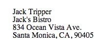
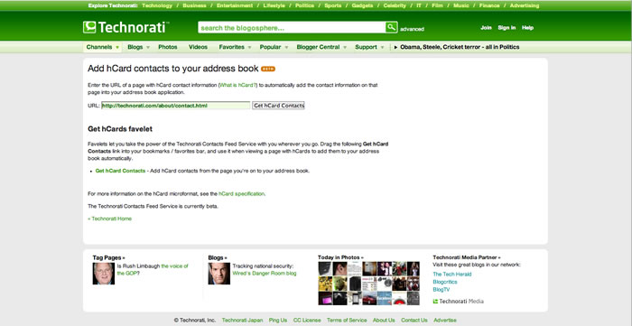
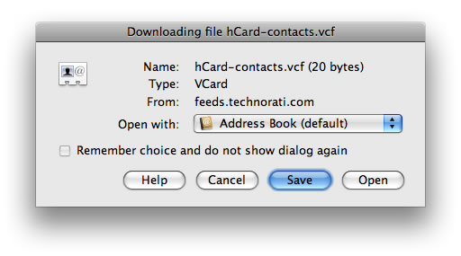

Introduction to hCard
Introduction
hCard is a way of representing contact information - including people, organizations and places - using nothing but XHTML class attributes. It is one of many standards detailed on the Microformats project, the aim of which is to provide standards for coding machine-readable information into web pages using semantic HTML.
Among other things, this standardized way of representing information allows for third-party software to glean this information and put it to all kinds of good use. hCard is the perfect vehicle for showing off the potential of Microformats, so let's take a look at how to create hCards, and how other sites make use of them.
What is an hCard?
The hCard Microformat is fashioned after the vCard, which is a popular file format for contact information. vCard is already implemented in a lot of software (including Microsoft Outlook and the Apple address book), so using it as a basis for an analogous web-focused format makes sense: it makes it readily compatible with a ubiquitous file format. The hCard is structured after the vCard in that its organization - the fields it uses - mirrors that of the standard vCard.
Let's take a look at a simple HTML hCard:
<div class="vcard">
<span class="fn n">Jack Tripper</span>
<div class="org">Jack's Bistro</div>
<div class="adr">
<div class="street-address">834 Ocean Vista Ave.</div>
<span class="locality">Santa Monica</span>,
<span class="region">CA</span>,
<span class="postal-code">90405</span>
</div>
</div>The div with the vcard class attribute identifies this block of HTML as an hCard. Each piece of contact data (or set of data) is then wrapped in an element sporting a standardized class name that, again, makes these bits of code "machine-readable" by identifying them as hCard fields.
Most of the fields are optional, and the hCard above only includes a sampling of possible class names. You can include telephone numbers, birthdays, email addresses, instant messaging handles, even photos. And while the above card is a relatively simple one, hCard allows you to map out complex contact data, including nicknames, home and work addresses and phone numbers, preferred phone numbers, and organization info. (Check out the full list of hCard fields).
The only required fields are fn and n, both of which label the contact name. The n class represents the full name (which would include first and last name fields, and any prefixes or suffixes). The fn class labels the "formatted name", or how you would like the name to appear as the label for the card (eg, you may prefer "Mr. Jack Tripper", or "Tripper, Jack" among others). As the formatted name and the full name are often the same, you can combine these fields by assigning both of these classes to the same element.
Figure 1 shows the default rendering of an hCard.
Figure 1. Default rendering of an hCard.
While perfectly legible, you can easily spruce up this sparse contact card with a bit of CSS.
hCard Tools and Uses
Marking up HTML as an hCard is fairly straightforward: it requires little more than labeling existing data with specialized classes. However, you may want to make use of a few good tools to make the process easier; details of available tools can be found in this section.
The Microformats.org hCard creator on the Microformats website is a simple tool to create valid hCards. While its interface doesn't include all of the hCard fields available, it’s a great way to quickly whip up an hCard with basic contact information.
If you're creating your hCards by hand, you may want to check out the hCard validator, which checks your syntax to make sure you're marking up the HTML correctly.
Once you've incorporated a few hCards into your website, you may wonder "Now what?" How can third-party sites or applications make use of this "machine-friendly" data? To illustrate hCards in action, let's look at them through the eyes of some popular third-party tools.
Technorati contact feeds
You should try out the Technorati Contacts Feed Service as shown in Figure 2.
This utility, which is available to use on the site and as a favelet, pulls out the hCard data from a Web address, and lets you download the data as a vCard. You can then import the vCard into your favorite address book application.
Figure 2. The Technorati hCards contacts page.
You can use the hCard extractor that's included on the web page, but let's install the favelet, so that we can use the tool in any browser. To do so, Drag the favelet link to your bookmarks toolbar/Personal Bar (you can see this link underneath the "Get hCards favelet" header).
Then, go to a page that includes an hCard. For example, Figure 3 shows a My Opera Profile page.
Figure 3. A My Opera Profile page, which features an hCard.
Click on the "Get hCard Contacts" favelet (in the Personal Bar). This will convert the hCards found on the page into vCards that will then be made available for download. You can then open up these vCards with a compatible address book application, as shown in Figure 4.
Figure 4: Exporting hCard content using the Technorati contact feeds service.
Utilities like these let you quickly identify and utilize the contact data contained in a web page. And what's great is that these tools are able to glean data from any website that has Microformatted data - including your humble blog or small business site!
Other Microformats applications
There are other applications out there that can utilize Microformats:
- Operator is a Firefox add-on that detects Microformatted text on a web page, and then provides you with options to do various things with this data, depending on the type of microformat.
- The Tails Firefox extension provides similar functionality to Operator.
- There are also a couple of budding Microformats search engines, including the Technorati search engine and Virel.
Summary
A simple construction of HTML elements, the hCard microformat makes the information in your site much more versatile, which is one of the reasons sites like Flickr and Google Maps use it to markup contact information. With tools such as those discussed above, it is well worth the effort to mark up your contact data using hCards; it makes it more easily accessible to developers and users alike.
pThis article is licensed under a Creative Commons Attribution, Non Commercial - Share Alike 2.5 license.
Comments
The forum archive of this article is still available on My Opera.
No new comments accepted.